.png)
A system’s visibility of it’s status is very important because it gives quick feedback to the user to ensure that they stay informed on what is happening on the application they are using. This allows them to make decisions based on the information they see that may change what they want to do next. Youtube shows this trait throughout its application for example if a user likes a video, as soon as they click it the total likes on the video will go up one to include their like. This is good for creators who want to look at results of their videos and how many likes or views to get in a specified time period.
.png)
Users can easily get confused on a site they never used before or are unfamiliar with. This is why matching between systems and the real world is an efficient heuristic to ensure success on an application. It makes the user feel more comfortable with the interface and will allow them to have a more successful navigating and complete task on the system. Youtube shows this trait by favoring the user’s recent searches, watched videos, likes, or subscriptions on the users homepage under an “All recommendations” tab. This shows videos that the user is most likely interested in or topics they have knowledge about making easier for them to find what they are looking for.
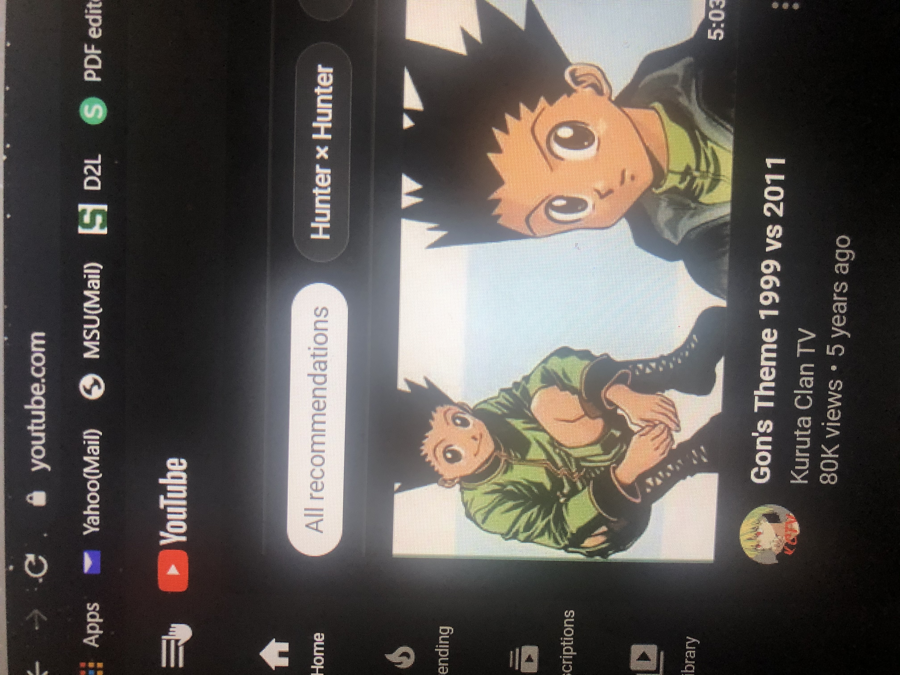
Mistakes are inevitable, users are bound to make a mistake eventually, but it is important to have the ability to also correct that mistake with a minimal inconvenience or difficulty to the user. The harder it is for the user to go back and correct a mistake the more egregious that one mistake becomes. Youtube includes the heuristic that gives the user an exit or a redo if a mistake does happen. A save and close option is added if a user is attempting to upload a video to their channel, also the process is broken up into steps and a “back” button is included if a user needs to change something on a previous step with no penalty to their process. This gives the user room for error and doesn’t stress them out about trying to be perfect.
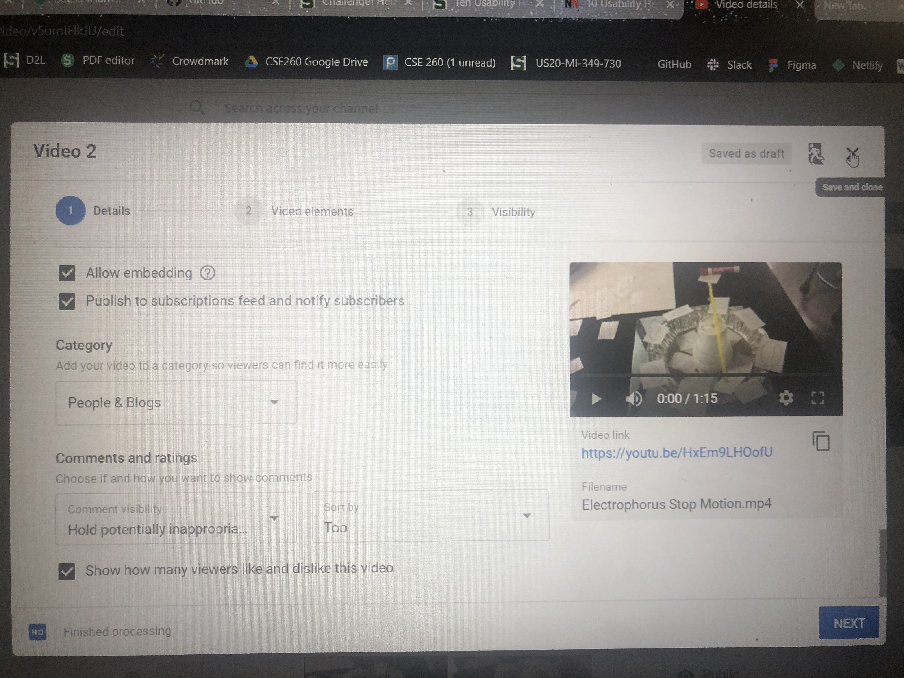
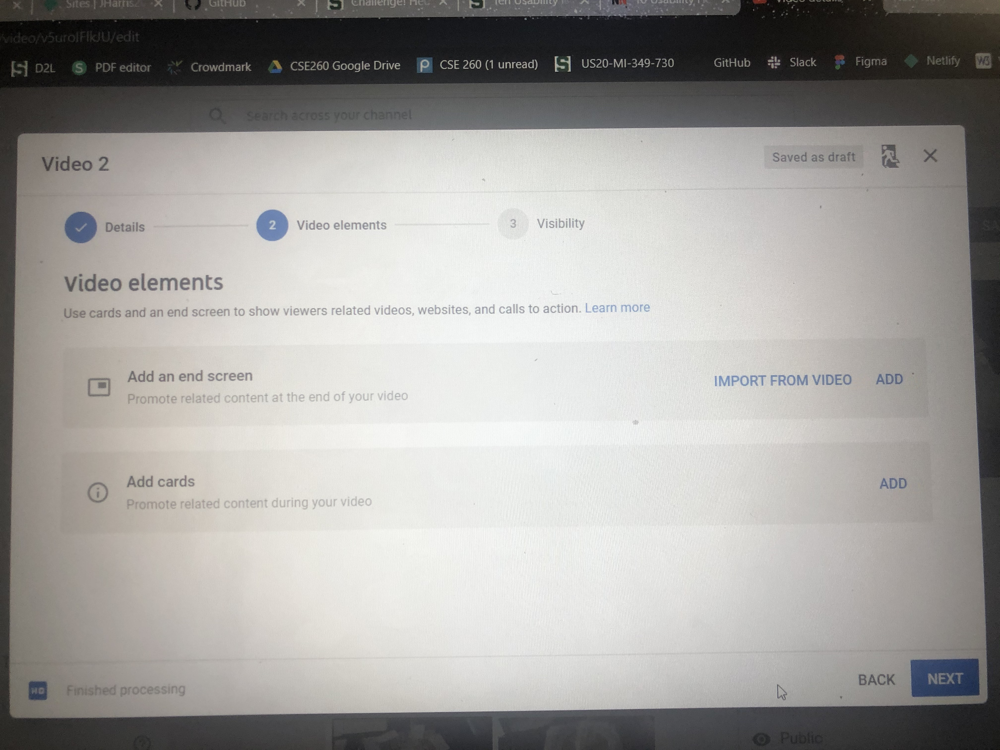
Consistency is key to how quickly users get accustomed to using an application. If an application was inconsistent it would cause confusion and inefficiency and detour users from wanting to use it. Youtube stays very consistent from channel to channel, it doesn’t matter if you’re a million subscriber account or an under 100 subscriber account. For example the main page for a verified ESPN account with 7 million subscribers has the same layout as a non-verified account with 76 subscribers. Since all channels are formatted the same way users will never be lost no matter what channel the end up on, they’ll be able to know exactly where to go if they want to check a channel’s playlist, or read more about the channel.
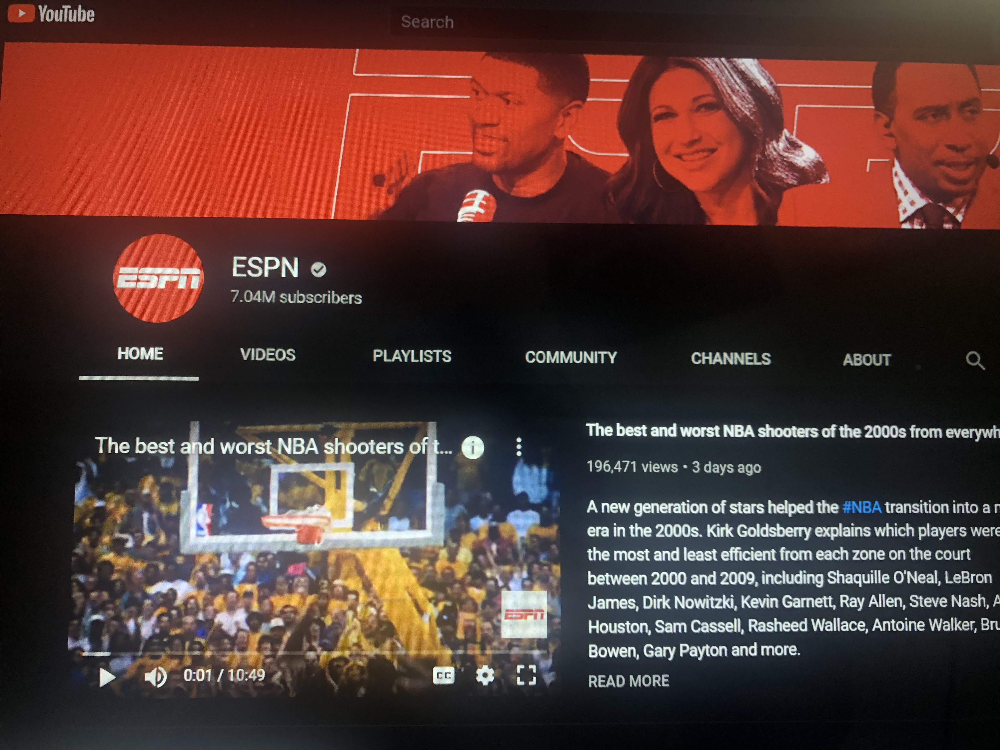
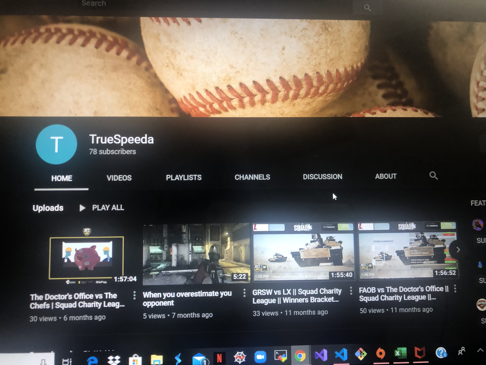
The best way to fix mistakes is to prevent mistakes from happening in the first place. The better a system includes checks or confirmations for users the less mistakes the user will make because it will cause them to rethink what they are currently doing. Youtube includes confirmations on tasks that will have a larger impact than others. For example if you want to watch a video you just need to click the video and it plays with no cost to the user, but say a creator wants to delete a video from their channel this task could potentially delete something they worked very hard on or gained many likes and views on that could potentially profit from. The impacts of the two tasks are gravely different. That's why the system ask the user if they are aware they are attempting to delete a video and asks for them to check the box and click delete video to confirm the action.
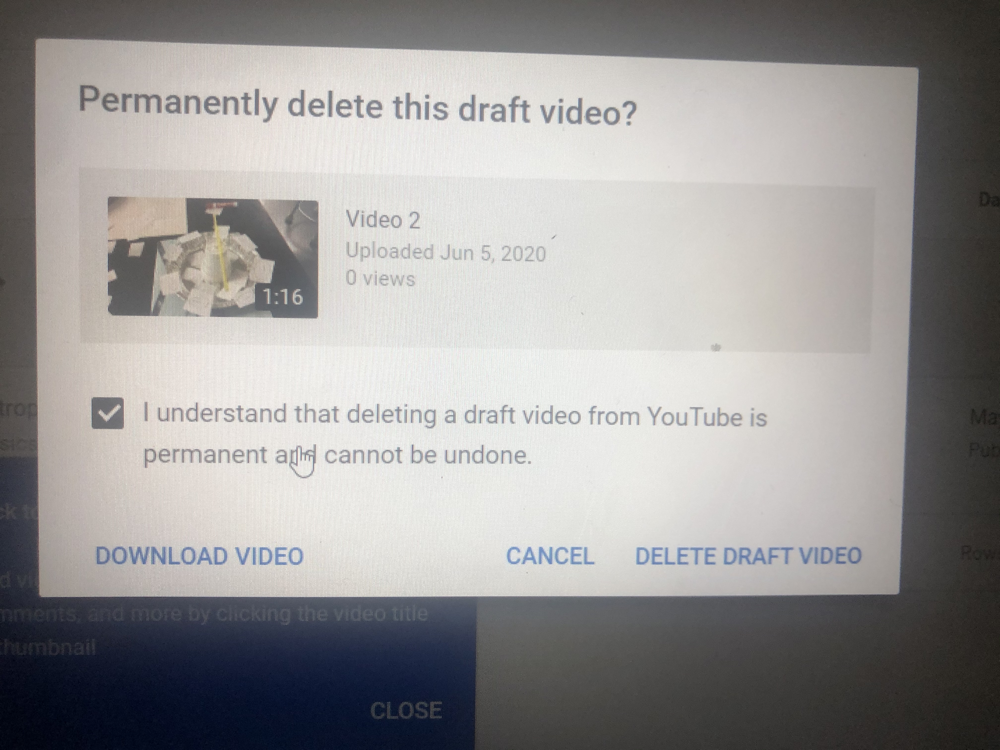
To improve usability it’s important not to ask too much from the user when the system could make tasks for them easier. It would be unnecessary for a user to have to remember where everything is everytime they use an application when a guide can be provided whenever they need it instead. Youtube addresses this heuristics by allowing by holding a history library that includes every video the user has watched in chronological order. This saves the user time trying to remember what was the name of that video they watched a week ago, they could simply scroll until they see it search by dates. Say they may recall watching a video, but don’t remember when, they can search keywords in their history that will bring up the videos that it relates to.
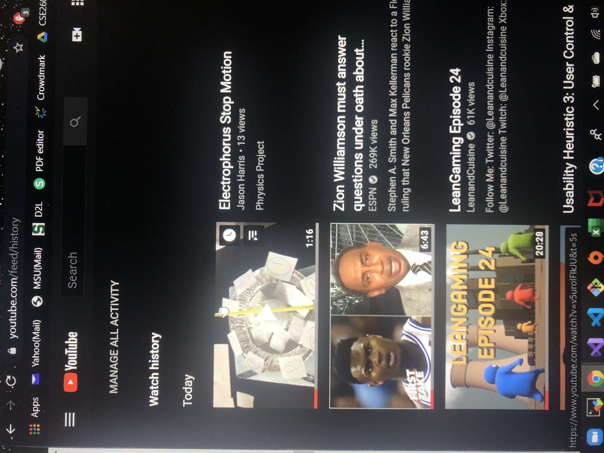
A system built to incorporate the use by inexperienced and experienced users are the most successful because it has the ability to range is usability between different users. The simplicity for the inexperienced users and the ability to be more efficient and advanced for the experienced users is the perfect balance for a good system. Youtube is a pretty simple platform, however for experienced users of the websites Youtube includes “advanced settings” that can tweak their experience using the application even more than before and more to their personal liking
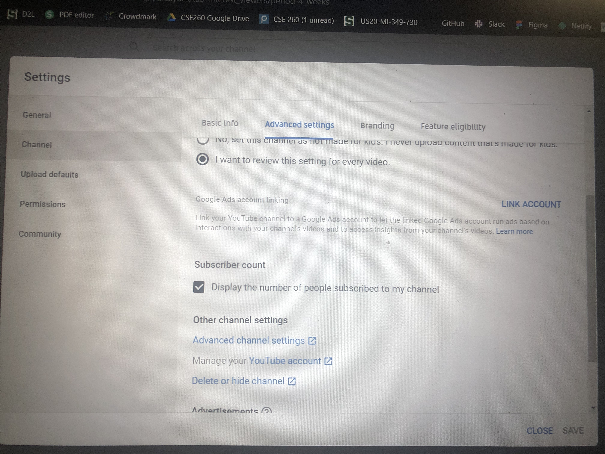
A page with an overwhelming amount of information can scare users away or distract and confuse them from the tasks they may be trying to perform. It is important for an interface to strictly show what’s needed and hide the unnecessary things that users may not want to see. Youtube includes this heuristic by adding different types of views while a user is watching a video. If it’s too much around the video they are attempting to watch they can choose between three modes that expand their video and get rid of distractions to the point where the video can be the only thing seen on the screen.
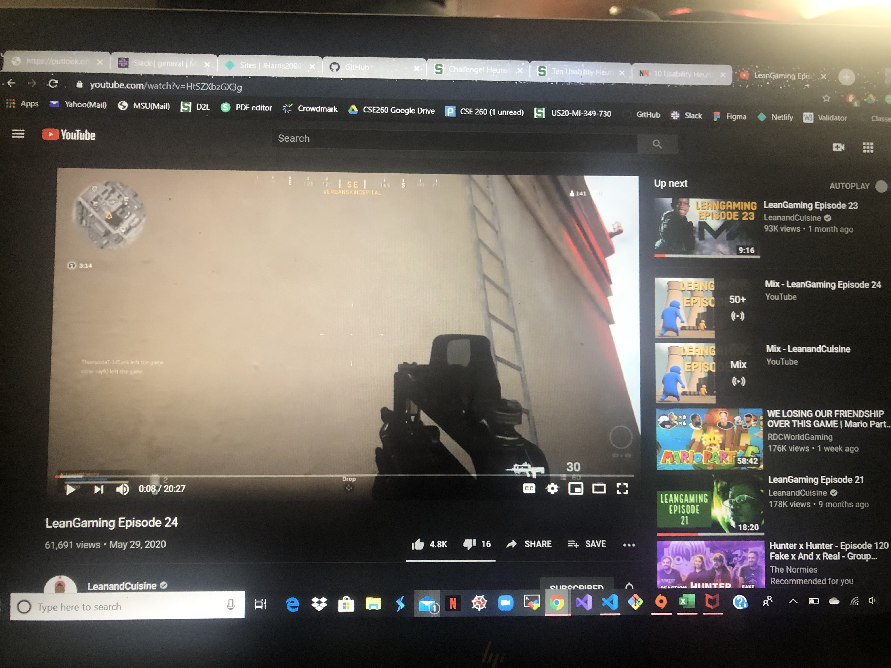
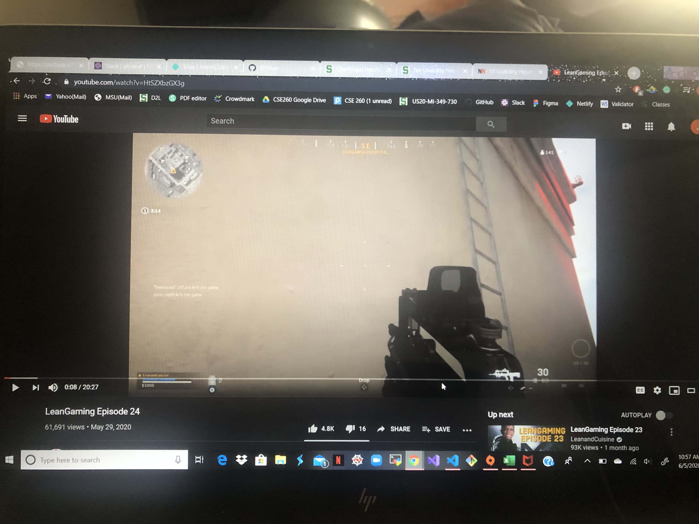
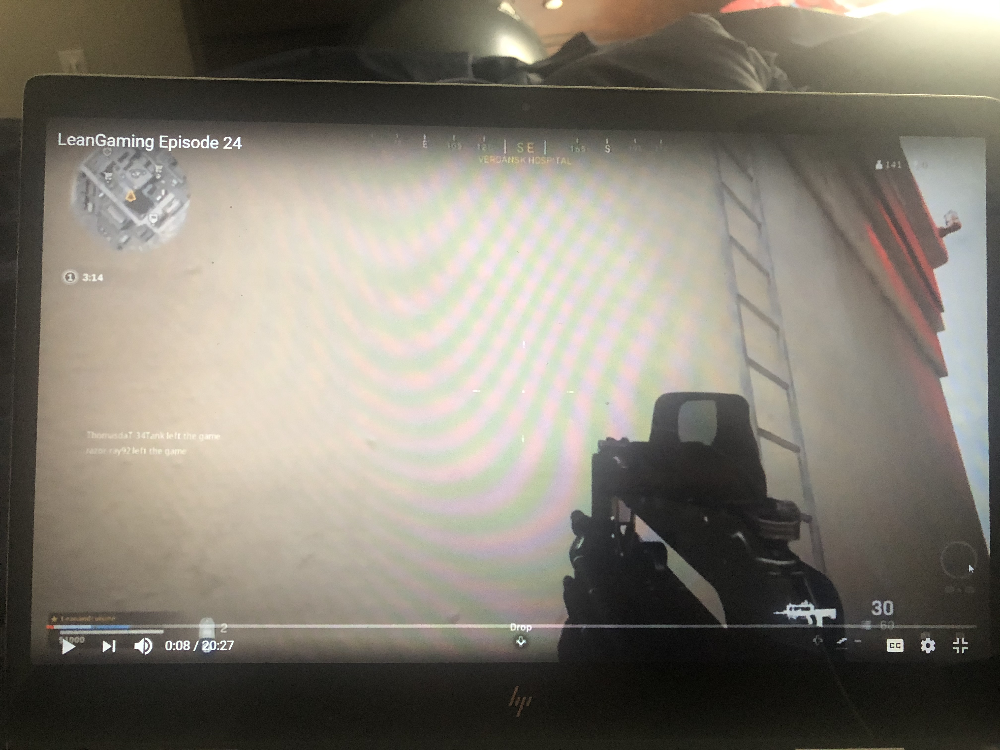
Error messages are essential for users to identify a problem and help find a solution to it. Error messages should explain the error simply, but also thorough enough for the user to understand what the error is and how to fix it. Youtube includes an error message if you are attempting to upload a video in the wrong format. The message is simple enough to know what’s wrong, it includes a read more tab if the user needs more information about the error and solutions to it. Say the error read “file won’t upload” instead, this description is more vague and may cause the user a harder time figuring out what the problem is and how to find a solution.
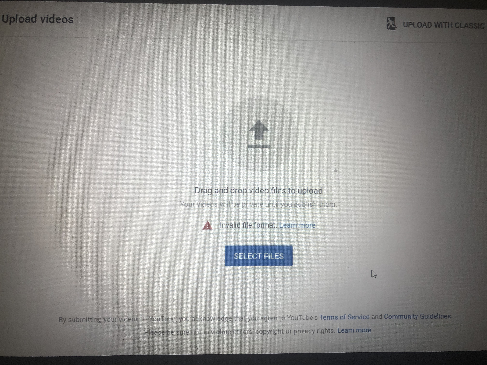
Help documentations are a necessary feature to have for systems to provide information a user wants to search about the system and answer what questions they may have. It is an easy way for users to seek help on specific topics that may not be included in error messages, or any other checking form. Youtube includes a help document that a user can search specific topics or scroll through the most popularly searched topics that may be a quicker way for the user to find their answer.
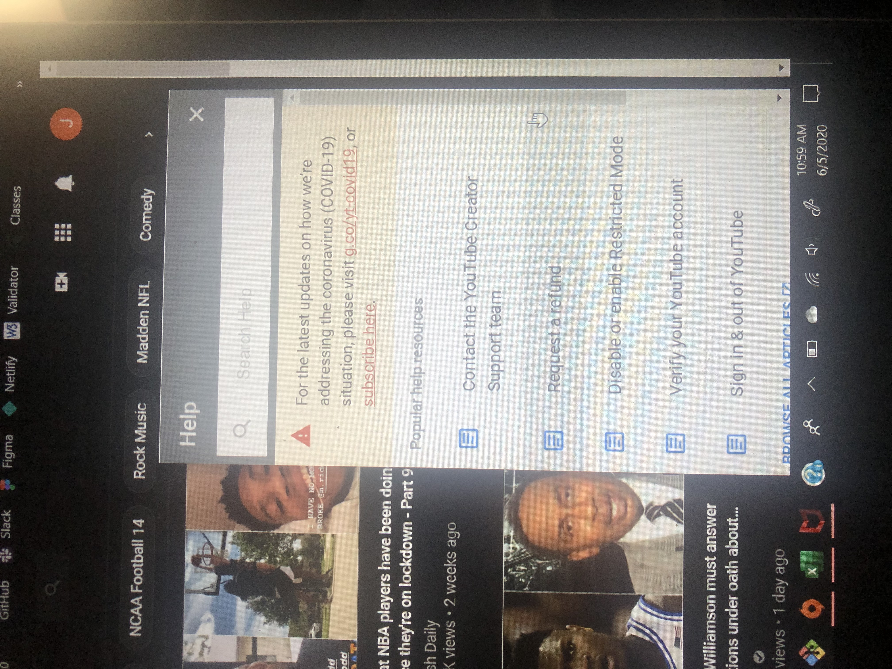